Introduction
Ce rapport accompagne le relevé d'audit effectué sur le site « Inondations.lu ».
La méthodologie d'audit employée repose sur le référentiel RGAA 4.1, consultable à l'adresse suivante : https://accessibilite.public.lu/fr/rgaa4.1/criteres.html
L'audit a été réalisé au moyen de l'utilisation de navigateurs web et d'outils spécialisés. Des tests de restitution ont également été effectués conformément à la base de référence définie par le RGAA 4.1.
Échantillon
L'audit a porté sur un échantillon de 15 pages pour le niveau double A (AA) :
| Nº page | Titre de la page | URL |
|---|---|---|
| P01 | Accueil | https://www.inondations.lu/?lang=fr |
| P02 | Contact | https://www.inondations.lu/information/contact?lang=fr |
| P03 | Mentions légales | https://www.inondations.lu/legal-notice?lang=fr |
| P04 | Authentification | https://www.inondations.lu/login?lang=fr |
| P05 | Actualités | https://www.inondations.lu/news?lang=fr |
| P06 | Cours d'eau - toutes les stations | https://www.inondations.lu/basins/alzette?show-all-graphs?lang=fr |
| P07 | Cours d'eau - page détails | https://www.inondations.lu/basins/alzette?station=1&show-details?lang=fr |
| P08 | S'inscrire | https://www.inondations.lu/register?lang=fr |
| P09 | FAQ | https://www.inondations.lu/information/faq?lang=fr |
Environnement de test (base de référence)
Quelques critères RGAA, notamment ceux de la thématique JavaScript, incluent des tests de restitution à effectuer sur des technologies d'assistance associées à des navigateurs et des systèmes d'exploitation. Pour qu'un dispositif HTML / WAI-ARIA ou son alternative soit considéré comme compatible avec l'accessibilité, il faut qu'il soit pleinement fonctionnel, en termes de restitution et de fonctionnalités sur certaines combinaisons. Vous trouverez une explication détaillée de cet environnement de tests dans le document du RGAA 4.1.
Nous détaillons ci-dessous la base de référence utilisée pour réaliser les tests de restitution des composants du site.
Environnement de test – ordinateur
| Technologie d'assistance | Navigateur |
|---|---|
| NVDA 2022.2 | Firefox 103 |
| JAWS 2022 | Firefox 103 |
| VoiceOver | Safari 15.6 |
Environnement de test — mobile
| Système d'exploitation | Technologie d'assistance | Navigateur |
|---|---|---|
| iOS 15.6.1 | VoiceOver | Safari |
Accessibilité des pages auditées
Le site présente un niveau général d'accessibilité faible.
Le niveau moyen de conformité relevé atteint 31,37 % de conformité sur l'ensemble des pages auditées, avec 33,33% de conformité au niveau simple A (A) et 25,00 % de conformité au niveau double A (AA).
Le site est non conforme.
Conformité RGAA 4.1 du site
| Conforme | Non conforme | |
|---|---|---|
| A | 33,33 % | 66,67 % |
| AA (légal) | 31,37 % | 68,63 % |
Note sur le calcul de conformité
La conformité globale (Tableau « Conformité RGAA 4.1 ») est calculée de la manière suivante : C / (C+NC). C est le nombre de critères conformes et NC le nombre de critères non conformes.
C'est ce nombre qui constitue la référence légale. Il représente le taux de conformité de l'échantillon.
Il est normal que le taux de conformité global diffère sensiblement du taux de conformité par page. En effet, un critère NC (non conforme) sur une page rend le critère non conforme sur l'ensemble de l'échantillon.
Pour qu'un site soit conforme (100 % des critères applicables sont conformes au niveau AA), il est nécessaire que le taux de conformité par page équivaille à 100 %.
Conformité pour chaque niveau
| Conforme | Non conforme | |
|---|---|---|
| A | 33,33 % | 66,67 % |
| AA | 25,00 % | 75,00 % |
Moyenne par pages
| Nº page | Titre de la page | %C |
|---|---|---|
| P01 | Accueil | 50,00 % |
| P02 | Contact | 80,00 % |
| P03 | Mentions légales | 75,00 % |
| P04 | Authentification | 81,48 % |
| P05 | Actualités | 65,22 % |
| P06 | Cours d'eau - toutes les stations | 50,00 % |
| P07 | Cours d'eau - page détails | 42,31 % |
| P08 | S'inscrire | 76,67 % |
| P09 | FAQ | 68,18 % |
Moyenne par thématiques
| Thématiques | C | NC |
|---|---|---|
| Images | 0% | 100% |
| Cadres | 50% | 50% |
| Couleurs | 0% | 100% |
| Multimédia | NA | NA |
| Tableaux | 0% | 100% |
| Liens | 0% | 100% |
| Script | 0% | 100% |
| Eléments obligatoires | 0% | 50% |
| Structuration | 0% | 100% |
| Présentation | 0% | 50% |
| Formulaires | 37,50% | 62,50% |
| Navigation | 40% | 60% |
| Consultation | 33,33% | 66,67% |
Impacts utilisateurs
Les principales personnes impactées sont les personnes aveugles et celles qui naviguent au clavier. Les problèmes liés aux scripts, à l'API ARIA et aux formulaires rendent parfois difficile l'utilisation du site par ces utilisateurs.
Les personnes mal-voyantes et/ou avec une déficience de la perception des couleurs sont également impactées, en raison des problèmes de contraste et des informations véhiculées par la couleur.
Contenus dérogés
La dérogation est un moyen d'exclure du champ d'application du référentiel des contenus particuliers. Les cas de dérogations sont très encadrés, vous en trouverez le détail dans le guide des dérogations.
Les contenus suivants n'entrent pas dans le calcul de la conformité ni dans le périmètre des éléments à rendre accessibles, ils sont dérogés :
- reCaptcha (motif : service externe).
Droit à la compensation
Les dérogations émises notamment pour charge disproportionnée demandent en contrepartie la mise en place d'un moyen de compensation pour les utilisateurs. Pour les documents bureautiques par exemple, vous devez fournir un moyen à l'utilisateur de demander une version accessible d'un document s'il en a besoin. Cela peut être un mail ou un formulaire de contact.
Note sur le relevé des non-conformités
Ne sont cités dans ce rapport que quelques exemples issus du relevé des non-conformités.
De plus, toutes les occurrences d'une non-conformité ne sont pas listées dans le relevé. Par exemple : les contrastes de couleur insuffisants, le relevé mentionne quelques occurrences, mais ne les cite pas tous.
Avis
L'absence d'un lien d'évitement, de structure HTML5 et de structure de titre peut rendre la navigation du site complexe à certains utilisateurs. Par ailleurs, on retrouve des problèmes de contrastes, mais aussi beaucoup d'informations véhiculées par la couleur.
Les non-conformités les plus bloquantes pour les utilisateurs concernent :
- Les textes et composants d'interface insuffisamment contrastés ;
- Les scripts inaccessibles au clavier et sans alternative ;
- L'absence de structure HTML 5 ;
- L'absence de structure de titre ;
- Les formulaires incorrectement structurés (étiquettes, regroupements et contrôles de saisie) ;
- Du contenu en mouvement non contrôlable par l'utilisateur.
Ce sont donc ces points qui devront nécessiter une attention toute particulière et qui demanderont le plus d'efforts.
Annexe technique
Images
Recommandation
Donner à chaque image porteuse d'information une alternative textuelle pertinente et une description détaillée si nécessaire. Lier les légendes à leurs images. Remplacer les images textes par du texte stylé lorsque c'est possible.
Images de décoration
Le site contient des images de décoration qui ne sont pas correctement identifiées, soit parce qu'elles ont une alternative renseignée, soit parce qu'il manque les attributs nécessaires pour qu'elles soient ignorées par les technologies d'assistance.
Ces images n'apportent aucune information et peuvent causer des problèmes de compréhension pour les aveugles et les grands malvoyants qui vont écouter les contenus avec un lecteur d'écran.
- Dans le cas d'une image insérée avec la balise
img, mettre unalt="". - Dans le cas d'une image insérée avec la balise
svg, mettre une propriété ARIAaria-hidden="true".
Constats sur le site
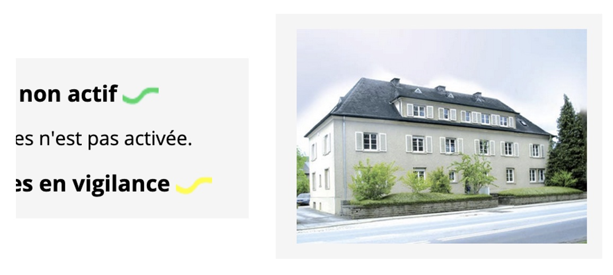On retrouve sur le site certaines images de décoration, comme les pictos des services de prévision dans la page d'Accueil ou encore la photo dans la page "Contact".
Images porteuses d'information
Il est nécessaire de donner une alternative pertinente dans le cas où la suppression de l'image entraînerait un problème de compréhension des contenus.
Constats sur le site
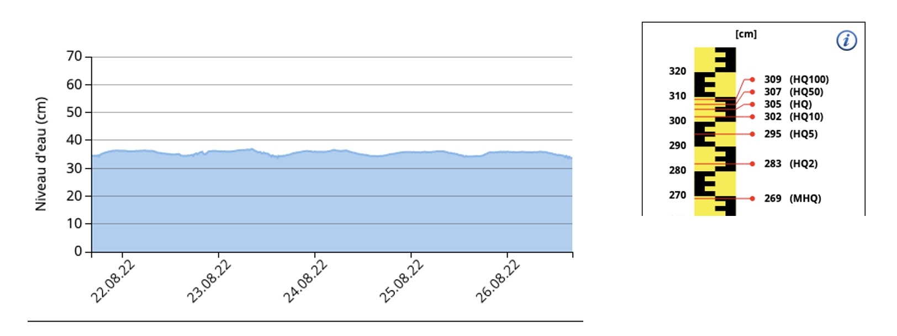Dans les pages des cours d'eau, on retrouve des images porteuses d'information sans texte alternatif, comme les graphiques par exemple.
Images porteuses d'information complexe
Certaines images porteuses d'informations sont complexes et nécessitent une description détaillée, pertinente, structurée et adjacente à l'image afin de permettre aux personnes ne percevant pas les images (comme les personnes aveugles), ou ayant des difficultés à les comprendre lorsqu'elles contiennent du texte (personnes ayant des difficultés de lecture, comme les dyslexiques par exemple) d'accéder à l'information.
Il sera possible de masquer cette description et de prévoir un bouton permettant à l'utilisateur de l'afficher si besoin (par exemple : « Afficher la description de l'image »). Voir un exemple de ce mécanisme. Il est également possible de proposer un lien adjacent à l'image vers la description détaillée.
Constats sur le site
Dans les pages des cours d'eau, on retrouve des images porteuses d'information complexe qui nécessitent une description détaillée, comme les graphiques par exemple.
Cadres
L'absence d'identification des cadres peut poser un problème de repérage dans la structure de la page ou de compréhension des contenus pour les personnes aveugles.
Constats sur le site
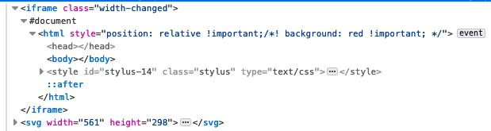Dans les pages des cours d'eau, on retrouve des cadres iframe qui n'ont pas lieu d'être restitués par les technologies d'assistance, donc devraient être ignorés.
Couleurs
Recommandation
Ne pas donner l'information uniquement par la couleur et utiliser des contrastes de couleurs suffisamment élevés pour les textes et les composants d'interface.
Contrastes des textes
Plusieurs couleurs présentent un rapport de contraste insuffisant, ce qui peut poser problème aux personnes déficientes visuelles qui ont des difficultés à percevoir les couleurs ou les contrastes.
Rapports de contrastes définis par le RGAA
- Pour les textes qui ont une taille de police calculée inférieure à 24px sans effet de graisse ou une taille de police calculée inférieure à 18,5px avec effet de graisse, le rapport de contraste entre la couleur du texte (y compris le texte en image) et son arrière-plan doit être de 4.5:1, au moins.
- Pour les textes qui ont une taille de police calculée supérieure ou égale à 24px sans effet de graisse ou une taille de police calculée supérieure ou égale à 18,5px avec effet de graisse, le rapport de contraste entre la couleur du texte (y compris le texte en image) et son arrière-plan doit être de 3:1, au moins.
Vous pouvez foncer les couleurs pour obtenir le rapport de contraste exigé.
Si la charte graphique ne peut être modifiée, fournissez une méthode aux utilisateurs pour consulter le site avec des contrastes suffisants. Ceci peut être réalisé simplement avec une fonctionnalité JavaScript et une surcharge CSS des couleurs.
Vous pouvez voir un exemple de ce type de mécanisme sur le site sncf.com. Dans les réglages d'accessibilité, vous trouverez une option qui permet d'afficher le site avec des contrastes renforcés et inversés.
Constats sur le site
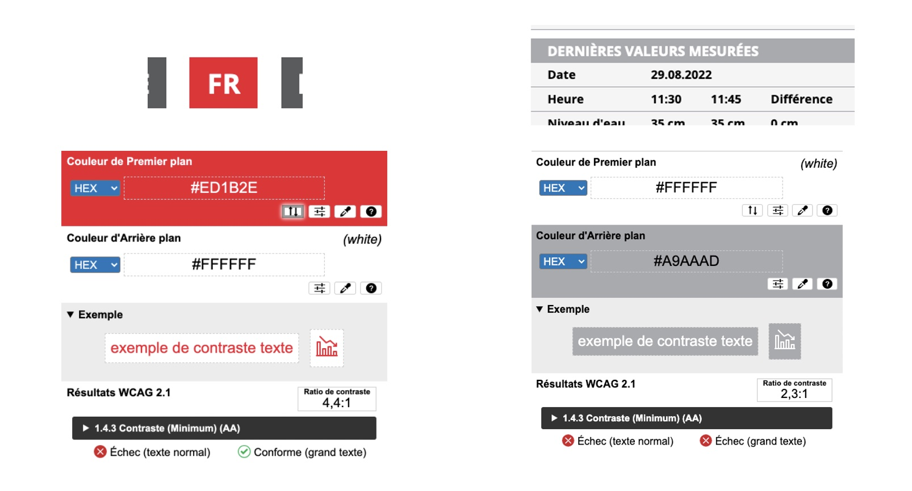Certains textes ont un rapport de contraste insuffisant, notamment :
- les textes en rouge
#ED1B23sur fond blanc#FFFFFFavec un ratio de 4,4 (au lieu de 5) ; - les textes en blanc
#FFFFFFsur fond gris#A9AAADavec un ratio de 2,3 (au lieu de 4,5).
Contraste des composants d'interface
Les composants d'interface, les illustrations porteuses d'information ou encore les mises en couleurs porteuses d'information doivent être suffisamment contrastés pour être perçus par les utilisateurs ayant des troubles de perception des couleurs. Par exemple, une icône porteuse d'information devra avoir un rapport de contraste avec la couleur de fond de 3. De même, pour un champ de saisie de formulaire, dont la zone active est matérialisée par sa bordure, alors la couleur de cette bordure devra avoir un rapport de contraste de 3 avec la couleur de fond de la page.
Constats sur le site
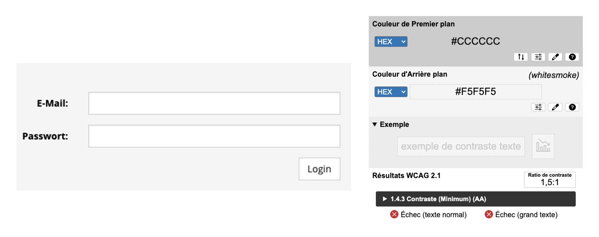Certains composants d'interface ont un rapport de contraste insuffisant, notamment les champs de saisie et les boutons des formulaires avec une bordure en gris #CCCCCC sur fond gris clair #F5F5F5 avec un ratio de 1,5 (au lieu de 3).
Information par la couleur
Lorsqu'une information est donnée par la couleur, il faut qu'elle soit également véhiculée par une autre méthode, par exemple par un texte qui donne la même information, pour être perçue par les utilisateurs aveugles.
Il faut également donner un indice visuel autre que la couleur, afin de répondre aux besoins des personnes déficientes visuelles (les daltoniens par exemple). Il peut s'agir d'un symbole, d'une texture, de chiffres.
Constats sur le site
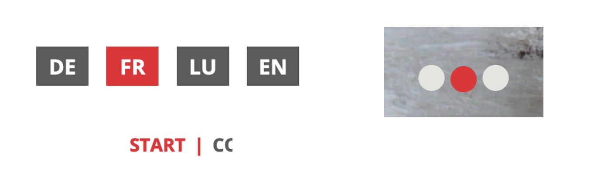On retrouve de nombreux composants où l'information est donnée par la couleur, comme :
- dans les différents menus de navigation, le menu de langue ou le menu principal par exemple, pour annoncer la page/rubrique active ;
- dans le carrousel, pour indiquer l'élément actif.
Tableaux
Recommandation :
Donner un résumé à chaque tableau de données complexe, s'assurer que pour chaque tableau de données ayant un titre, ce titre est pertinent, identifier clairement les cellules d'en-tête, utiliser un mécanisme pertinent pour lier les cellules de données aux cellules d'en-tête. Pour chaque tableau de mise en forme, veiller à sa bonne linéarisation.
Tableaux de données
Un tableau de données doit répondre à certains enjeux pour être exploité correctement par les lecteurs d'écran. Les enjeux sont les suivants :
- Le tableau doit posséder un titre permettant de l'identifier (
<caption>) ; - Les en-têtes doivent être identifiés (balises
<th>) et doivent pouvoir être restitués lorsque l'utilisateur parcourt chaque cellule à l'aide de son lecteur d'écran (attributsscopesi nécessaire).
Constats sur le site
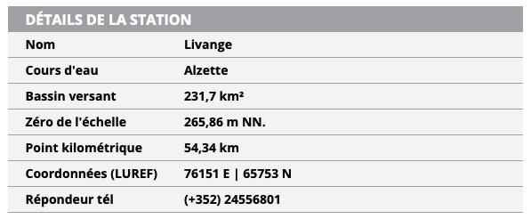Dans les pages des cours d'eau, on retrouve des tableaux ("Détails de la station" par exemple) dont le titre n'est pas structuré comme tel et dont les en-têtes de ligne ne sont pas identifiés correctement.
Liens
Recommandation :
Donner des intitulés de lien explicites, grâce à des informations de contexte notamment, utiliser le titre de lien le moins possible. S'assurer que le nom visible est contenu dans le nom accessible.
Pertinence des intitulés
Un lien possède généralement un intitulé et un contexte. L'intitulé est le texte présent dans la balise <a> (ou la valeur de l'attribut alt de l'image dans le cas d'un lien-image) et le contexte du lien est représenté par le titre qui précède, le titre du lien (l'infobulle) ou tout simplement le texte dans lequel il est inséré.
Pour être considéré comme pertinent, l'intitulé d'un lien doit permettre de comprendre sa destination en prenant en compte son contexte.
Constats sur le site
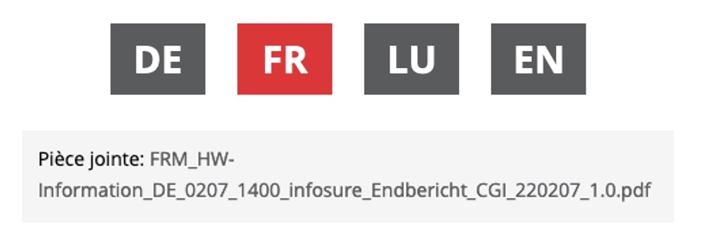On retrouve sur le site des liens dont l'intitulé n'est pas suffisamment pertinent, comme :
- les liens "DE", "FR", "LU" ou "EN" du menu de langue ;
- l'intitulé des documents bureautiques à télécharger, reprenant le nom du ficher, par exemple "FRM_HW-Information_DE_0207_1400_infosure_Endbericht_CGI_220207_1.0.pdf".
Liens-images
Un lien-image est un lien dont le contenu n'est composé que d'une ou plusieurs images (balises <img>). Généralement, ces liens ne posent aucun problème aux utilisateurs voyants qui parviennent à comprendre la destination du lien grâce à l'image et son contexte. En revanche, pour une personne aveugle, ces liens doivent obligatoirement posséder un intitulé.
L'intitulé d'un lien-image est généré grâce à l'alternative de l'image contenue dans ce lien.
Constats sur le site
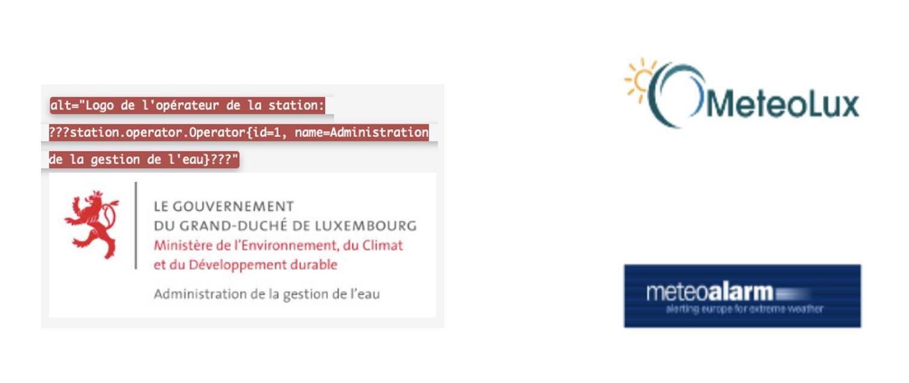On retrouve de nombreuses images cliquables sans intitulé ou dont l'intitulé n'est pas suffisamment pertinent, comme :
- le logo du Gouvernement du Grand-Duché de Luxembourg qui mène vers eau.public.lu, dont le texte alternatif est
Logo de l'opérateur de la station: ???station.operator.Operator{id=1, name=Administration de la gestion de l'eau}???; - les images cliquables de la page d'Accueil vers MeteoLux et "MeteoAlarm" n'ont pas d'intitulé (
altabsent).
Présence d'intitulés
Un lien doit toujours posséder un intitulé permettant à l'utilisateur de comprendre sa destination. Les liens contenant uniquement des objets graphiques (images, icônes, etc.) posent souvent problème pour les personnes aveugles.
Pour ces liens, la technique pour fournir un intitulé dépend des cas :
- Si ces liens-images sont construits avec des balises images (
<img />), renseignez l'alternative de l'image (par exemple :<a href="https://twitter.com/example"><img src="path/to/img/png"alt="Suivez-nous sur Twitter" /></a>) ; - Si ces liens-images sont construits avec des balises SVG (
<svg>), alors ajoutez sur cette balise unrole="img"pour indiquer aux lecteurs d'écran qu'il s'agit bien d'une image et un intitulé pararia-label="Suivez-nous sur Twitter".
Constats sur le site
Dans la navigation principale, le lien vers la version mobile du site n'a pas d'intitulé, il s'agit juste d'un picto.
Scripts
Recommandation :
Donner si nécessaire à chaque script une alternative pertinente. Rendre possible le contrôle de chaque code script au moins par le clavier et la souris et s'assurer de leur compatibilité avec les technologies d'assistance. Identifier les messages de statut lorsque c'est nécessaire.
Utilisation des boutons et des liens
Pour les aveugles et les grands malvoyants qui utilisent un lecteur d'écran, ce manque de distinction claire entre les liens et les boutons peut poser de graves problèmes.
Ainsi, un bouton implémenté sous la forme d'un lien qui déclenche une action de la page risque de perturber l'utilisateur qui s'attendra au chargement d'une nouvelle page.
De manière générale, les liens devraient être réservés à l'affichage d'une nouvelle page ou la création de liens d'accès rapide dans le contenu. Dans tous les autres cas, l'emploi d'un bouton d'action est plus pertinent.
Enfin, chaque bouton doit avoir un nom accessible défini, soit par l'intermédiaire d'un texte (visible ou positionné hors écran) ou d'une propriété title, aria-label ou aria-labelledby.
Constats sur le site
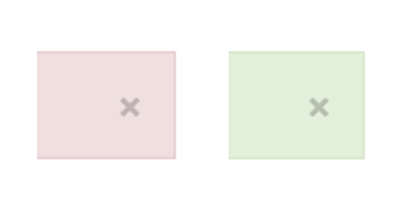Dans les messages d'alerte, les boutons pour fermer l'alerte n'ont pas d'intitulé.
Éléments interactifs inaccessibles au clavier
Si un élément ne peut pas recevoir le focus ou n'est pas totalement utilisable au clavier, les utilisateurs pour lequels le clavier est le seul moyen de naviguer seront bloqués.
Constats sur le site
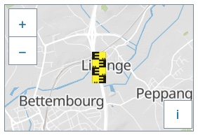Dans la page détail d'une station, dans le composant de géolocalisation, il n'est pas possible d'atteindre ni même de connaître la localisation exact de la station via le clavier et les technologies d'assistance.
Gestion de la visibilité de zones
Le site possède des fonctionnalités d'affichage ou de masquage des zones de contenus. L'état affiché/masqué du contenu additionnel doit pouvoir être disponible pour les technologies d'assistance afin que les utilisateurs aveugles accèdent à cet état.
Pour ce type d’élément, l’implémentation du motif ARIA Disclosure est recommandée.
Constats sur le site
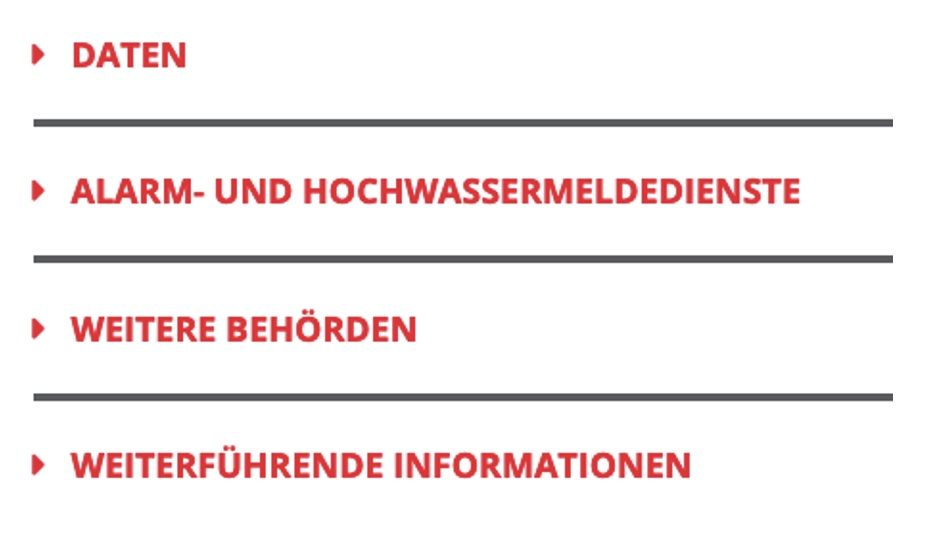Dans la page "Où trouver", on retrouve des zones permettant d'afficher/masquer du contenu : "Daten", "Alarm- und Hochwassermeldedienste", "Weitere Behörden", "Weiterführende Informationen".
Carrousel
Le site possède un carrousel pourvu de puces uniquement permettant d’activer un contenu particulier du carrousel. Le carrousel doit être compatible avec les technologies d'assistance et les puces doivent pouvoir être atteinte au clavier.
Pour ce type d’élément, l’implémentation du motif ARIA Tabbed Carrousel est recommandée.
Constats sur le site
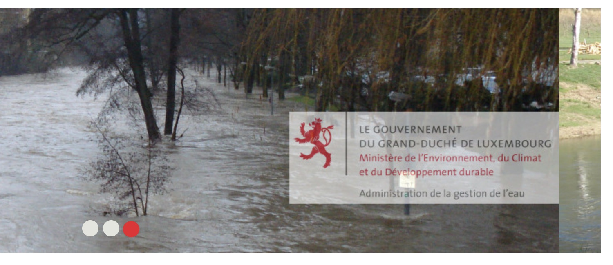Dans certaines pages, dont la page d'accueil, on retrouve un carrousel non compatible avec les technologie d'assistance, et dont les puces ne sont pas atteignables au clavier.
Message de statut
Les messages de statut concernent les messages d'alerte, de confirmation ou d'historisation. Dans tous ces cas, certains utilisateurs, par exemple les personnes aveugles ou les utilisateurs de loupes d’écran vocalisées, risquent de ne pas prendre connaissance de ces messages si leur restitution n'est pas contrôlée.
L'API ARIA propose plusieurs rôles spécifiques qui permettent de contrôler la restitution de ce type de message :
- Le
role="alert"pour les messages d'alerte ; - Le
role="status"pour les messages de confirmation ; - Le
role="log"pour les messages d'historisation.
L'utilisation appropriée de ces rôles va permettre de déclencher leur vocalisation dès qu'ils deviendront actifs (rendus visibles ou insérés dans le DOM).
Constats sur le site
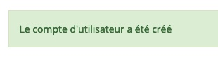À la validation de la création d'un compte utilisateur, le message "Le compte d'utilisateur a été créé" ne possède pas de role="status".
Éléments obligatoires
Recommandation
Vérifier que chaque page web a un code valide selon le type de document, un titre pertinent et une indication de langue par défaut. Vérifier que les balises ne sont pas utilisées uniquement à des fins de présentation, que les changements de langues et de direction de sens de lecture sont indiqués.
Titre de la page
Le titre de la page (visible dans l'onglet du navigateur) est un élément de repère dans le site web. Pour les utilisateurs de lecteurs d'écran (utilisateurs aveugles ou grands malvoyants), c'est le premier élément restitué par le lecteur d'écran au chargement de la page. Cela permet de donner du contexte aux utilisateurs qui n'ont pas une vision globale de la page. C'est l'information à laquelle les utilisateurs avec des troubles de la mémoire accèdent lorsqu'ils naviguent avec l'historique de navigation du navigateur. Il est donc essentiel d'avoir des titres de pages pertinents, concis et très souvent uniques dans le site, et qui reflètent de la position de l'utilisateur dans le site web.
Il est des cas particuliers, comme les pages dont le contenu est une liste de résultats paginés (ex. : les résultats de recherche), pour lesquels le titre doit refléter la nature de la recherche ainsi que le numéro de page en cours de consultation.
Constats sur le site
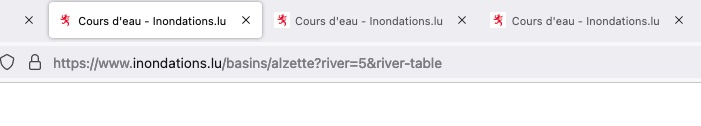Pour certaines pages, le titre de la page n'est pas suffisamment pertinent, notamment :
- les pages détails des stations, dont le
titledevrait reprendre le nom de la station, au moins ; - la page FAQ, dont le
titledevrait reprendre le nom de la rubrique, au moins.
Indication de langue
Les lecteurs d'écran utilisent les indications de langue pour vocaliser le contenu dans la langue définie. La page doit contenir une définition de langue principale (généralement sur l'élément html).
Ensuite, les éléments de langue étrangère présents dans le contenu doivent être signalés. Si on trouve dans la page des termes absents du dictionnaire de la langue principale de la page, il faut les identifier afin que le lecteur d'écran les restitue dans la langue appropriée. En effet, une mauvaise prononciation pourrait mener à des incompréhensions pour les utilisateurs qui reposent uniquement sur des restitutions orales. Les noms propres sont exclus de cette obligation.
Constats sur le site
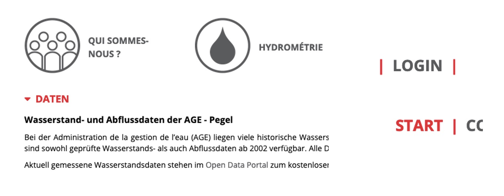La version française du site comporte beaucoup de texte dans une langue étrangère non signalé à l'aide de l'attribut lang, notamment :
- Dans la page FAQ, le contenu principal est en allemand ;
- Dans le menu principal, certains termes sont en anglais, comme "login" ou "start".
Validité du code
Les technologies d'assistance, comme les lecteurs d'écran ou les systèmes de contrôle à la voix, s'appuient sur le code des pages pour générer les restitutions et les interactions avec l'utilisateur. Un lecteur d'écran va exploiter le code HTML fourni par le navigateur et les informations accessibles au moyen des API d'accessibilité du système.
Si le code comporte des erreurs (balises mal fermées par exemple), il y a un risque que les fonctionnalités du lecteur d'écran soient impactées, comme la navigation de lien en lien par exemple.
Pour vérifier la conformité d'une page, vous pouvez utiliser le validateur mis à disposition par le W3C.
Constats sur le site
Dans la page d'Accueil, on retrouve une balise <p> mal fermée.
Balises utilisées à des fins de présentation
Les éléments de structure HTML ont chacun une sémantique particulière (paragraphe, titre, image, lien, etc.). Si les éléments sont mal employés (détournés de leur utilité première), cela peut poser des problèmes aux utilisateurs qui naviguent à l'aide d'une technologie d'assistance (lecteur d'écran, plug-in…). En effet, les technologies d'assistance disposent de raccourcis permettant de naviguer rapidement entre certains types d'éléments (paragraphes, titres, listes, etc.). Si ces éléments sont mal employés, les utilisateurs ne peuvent pas utiliser ces fonctionnalités de repère et de navigation dans le contenu.
Constats sur le site
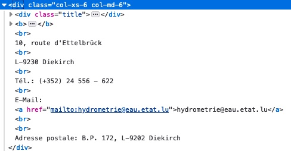Dans la page Contact, le contenu du bloc "Contact" n'est pas structuré à l'aide d'éléments HTML sémantiques, les paragraphes sont générés à l'aide de br au lieu de p.
Structuration de l'information
Recommandation
Utiliser des titres, des listes, des abréviations et des citations pour structurer l'information. S'assurer que la structure du document est cohérente.
Titres
Le titrage des contenus est une étape importante dans la structuration des contenus. Cela répond à deux besoins :
- identifier rapidement un contenu recherché ;
- naviguer rapidement dans le contenu en se déplaçant de titre en titre.
Un titrage correct fournit à l'utilisateur d'un lecteur d'écran un plan du document et lui permet de naviguer de titre en titre pour se déplacer plus rapidement dans le contenu de la page.
Pour valider la structure de votre page, vous pouvez utiliser l'extension Firefox HeadingsMap. Lorsque l'extension est active, sélectionnez l'onglet « Headings » et vérifiez la cohérence et l'imbrication des titres.
Constats sur le site
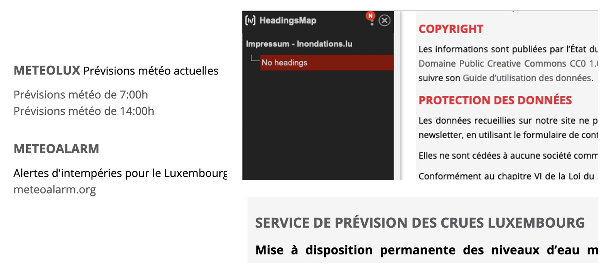Sur de nombreuses pages, la hiérarchie des titres n'est pas cohérente, voire inexistante, notamment :
- Dans la page d'Accueil, les textes "Service de prévision des crues Luxembourg", "Meteolux Prévisions météo actuelles" ou encore "MeteoAlarm" devraient être structurés sous forme de titres ;
- Aucun titre dans la page "Mentions légales".
Listes
La structuration en listes permet aux utilisateurs de lecteurs d'écran de consulter plus rapidement le contenu, grâce à des raccourcis spécifiques, et d'accéder directement à une liste ou de la passer sans avoir à en parcourir tous les items.
Constats sur le site
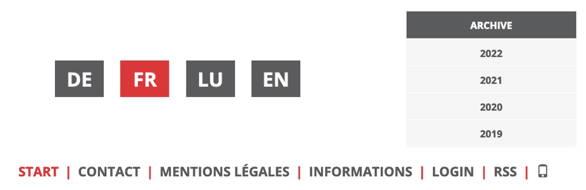De nombreuses suites de liens ne sont pas structurées sous forme de listes, notamment :
- La suite de liens du menu langue ;
- La suite de liens du menu principal ;
- La suite de liens du bloc "Archive".
Structure du document
L'utilisation correcte des balises HTML5 et des landmarks ARIA va permettre d'enrichir la restitution pour les utilisateurs aveugles qui ne perçoivent pas les mises en forme : la navigation principale ne sera plus perçue simplement comme une liste de liens, elle sera restituée à l'utilisateur comme un élément de navigation, par l'intermédiaire du lecteur d'écran qui annoncera « région » ou « repère ».
De plus, ces marqueurs sémantiques vont également constituer des éléments de navigation rapide dans la page. Grâce à un raccourci clavier, certains utilisateurs vont pouvoir naviguer plus rapidement entre les régions qui auront été ainsi identifiées.
Constats sur le site
La structure HTML 5 est absente sur l'ensemble du site, notamment :
- L'en-tête du site, qui devrait être structuré dans une balise
<header>; - Les éléments de navigation du site, qui devraient être structurés dans une balise
<nav>; - La zone de contenu principale du site, qui devrait être structurée dans une balise
<main>; - Le pied de page du site, qui devrait être structuré dans une balise
<footer>.
Présentation de l'information
Recommandation
Utiliser des feuilles de styles pour contrôler la présentation de l'information. Vérifier l'effet de l'agrandissement des tailles des caractères sur la lisibilité. S'assurer que les liens sont correctement identifiables, que la prise de focus est signalée, que l'interlignage est suffisants et donner la possibilité à l'utilisateur de contrôler la justification des textes. S'assurer que les textes cachés sont correctement restitués et que l'information n'est pas donnée uniquement par la forme ou la position d'un élément. S'assurer que les contenus sont lisibles et utilisables dans une fenêtre de largeur réduite. Veiller à ce que l'application de paramètres typographiques n'entraîne pas la perte de contenu ou de fonctionnalité. S'assurer que les contenus qui apparaissent au survol et à la prise de focus puissent être contrôlés par l'utilisateur.
Agrandissement des tailles de texte
Certaines personnes déficientes visuelles, également des personnes ayant des difficultés de lecture comme les personnes dyslexiques, ont besoin d'adapter la taille du texte à l'écran.
L'agrandissement des caractères ne doit pas provoquer de perte d'informations. À 200%, le contenu doit rester lisible et compréhensible, toutes les informations doivent rester présentes.
Il existe plusieurs méthodes pour contrôler l'agrandissement des caractères :
- La fonction d'agrandissement du texte du navigateur (le zoom texte) ;
- Les fonctions de zoom graphique du navigateur ;
- Un composant d'interface propre au site permettant d'agrandir le texte ou de zoomer.
Constats sur le site
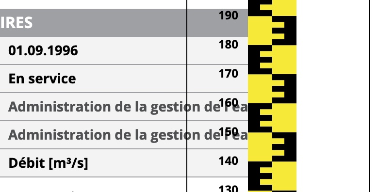Certains contenus deviennent illisibles, notamment dans la page détail d'une station où le contenu de la zone principale se chevauche avec le contenu de la colonne de droite.
Liens dont la nature n'est pas évidente
Un lien dont la nature n'est pas évidente est un lien qui peut être confondu avec un texte normal lorsqu'il est signalé uniquement par la couleur par certains utilisateurs ne percevant pas ou mal les couleurs.
Les personnes déficientes visuelles peuvent ignorer ces liens puisque ceux-ci ne sont pas visuellement discernables du reste du texte dans lequel ils sont insérés.
Constats sur le site
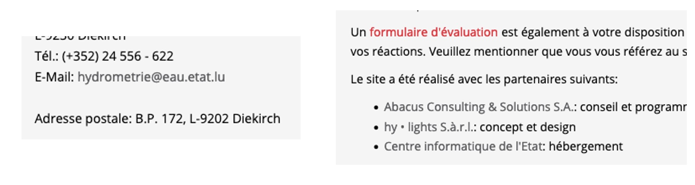Dans les zones de contenu, comme dans la page "Contact", "Mentions Légales" ou encore "Actualités", les liens sont signalés uniquement par la couleur.
Visibilité de la prise de focus
Les personnes avec un handicap moteur qui naviguent au clavier peuvent rencontrer des difficultés considérables à utiliser du contenu si elles ne sont pas en mesure de repérer l'indication visuelle du focus et ses déplacements.
Constats sur le site
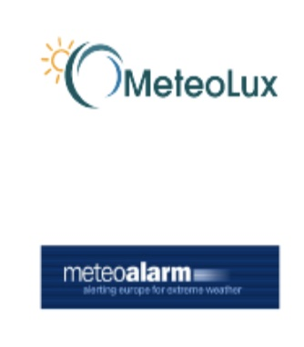La prise de focus n'est pas visible sur certains éléments, notamment les images cliquables "MeteoLux" et "MeteoAlarm" de la page d'Accueil.
Largeur réduite
Il s'agit ici de tester la capacité des contenus à se réorganiser lorsqu'un utilisateur malvoyant doit réaliser un zoom graphique de 400%. À ce titre, on teste la lisibilité des contenus dans une fenêtre de largeur réduite à 320px.
On s'assure que l'utilisateur a accès à tous les contenus et que tous les contenus sont lisibles sans avoir recours à la barre de défilement horizontale.
Constats sur le site
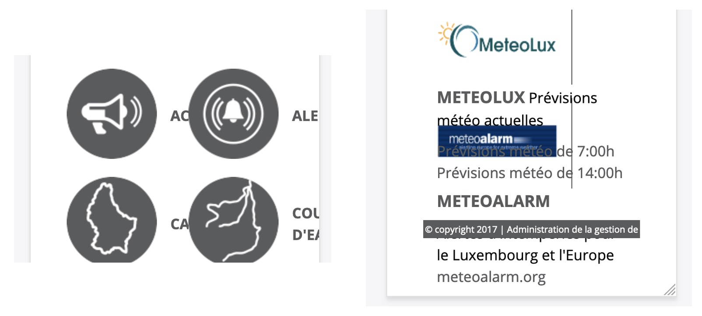Certains contenus ne sont plus lisibles lorsqu'on réduit la fenêtre à une largeur de 320px, notamment :
- Les éléments de la navigation secondaire ;
- Le bloc "Meteolux Prévisions" les images cliquables "MeteoLux" et "MeteoAlarm" de la page d'Accueil ;
- Le contenu du pied de page est tronqué.
Paramètres typographiques
Les utilisateurs malvoyants et/ou dyslexiques ont souvent recours à des adaptations de la présentation des textes. Pour cela, on doit s'assurer que de tels paramètres ne viennent pas perturber leur lecture sur le site.
Les présentations doivent supporter l'application de paramètres typographiques visant à augmenter les interlignages, interlettrages, les espaces entre les mots et entre les paragraphes. L'application de ces paramètres ne doit pas entraîner la perte de contenus ou de fonctionnalités :
- L'interlignage augmenté de 1,5 fois la taille de la police ;
- L'espacement entre les paragraphes augmenté de 2 fois la taille de la police ;
- L'espacement des lettres augmenté de 0,12 fois la taille de la police ;
- L'espacement des mots augmenté jusqu'à 0,16 fois la taille de la police.
Constats sur le site
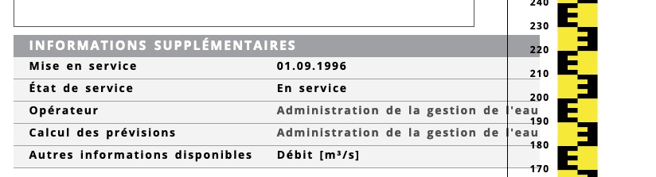Certains contenus deviennent illisibles, notamment dans la page détail d'une station où le contenu de la zone principale se chevauche avec le contenu de la colonne de droite.
Formulaires
Recommandation :
Associer pour chaque formulaire chacun de ses champs à son étiquette, grouper les champs dans des blocs d'informations de même nature, regrouper les items de même nature dans les listes de choix, donner à chaque bouton un intitulé explicite. Vérifier la présence d'aide à la saisie, s'assurer que le contrôle de saisie est accessible et que l'utilisateur peut contrôler les données à caractère financier, juridique ou personnel.
Étiquettes et champs
Les champs de formulaires doivent tous posséder des étiquettes correctement reliées.
Une étiquette de champ est un texte situé à proximité du champ de formulaire qui permet de connaître la nature, le type ou le format des informations attendues.
De cette manière, lorsqu'un utilisateur entre dans le champ de saisie avec un lecteur d'écran, le lecteur d'écran lit le contenu de l'étiquette. L'utilisateur comprend alors ce qu'il doit saisir.
Sans cela, même si une étiquette est présente visuellement, l'utilisateur entendra « champ de saisie vide » en entrant dans le champ et ne saura donc pas quoi saisir.
Constats sur le site
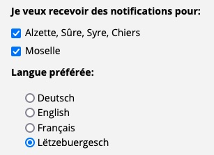Dans le formulaire de création d'un compte utilisateur, certains champs de formulaire n'ont pas d'étiquette correctement reliée, notamment les boutons radio et les cases à cocher.
Contrôle de saisie et aide à la saisie
Tous les champs obligatoires doivent être identifiés préalablement à toute validation de l’utilisateur.
Pour les champs qui attendent un format de saisie particulier pour être validés, ce format doit être spécifié à l’utilisateur par un passage de texte visible à proximité du champ. De plus, si l’utilisateur commet une erreur sur ce champ, alors le message d’erreur doit présenter un exemple réel de saisie.
Enfin, les messages d'erreur de saisie des champs de formulaire doivent être liés correctement aux champs en erreur.
Constats sur le site
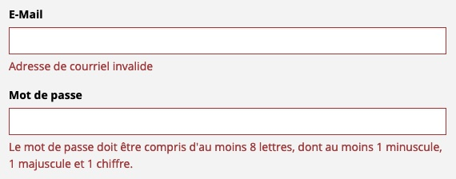Dans le formulaire de création d'un compte utilisateur, le contrôle et l'aide à la saisie ne sont pas suffisants, notamment :
- La mention des champs obligatoires est absente ;
- Le champ "E-mail" qui attend un format particulier n'est pas précisé ;
- Les messages d'erreurs ne sont pas correctement liés à leurs champs respectifs ;
- Certains messages d'erreurs, comme pour le champ "E-mail", sont incomplets.
Regroupements de champs et légendes
Les regroupements de champs sont utiles pour ne pas induire certains utilisateurs en erreur, notamment les personnes aveugles.
Les cas typiques de regroupements nécessaires sont les groupes de cases à cocher ou de boutons radio.
Il faut implémenter les champs dans un regroupement lorsque c'est nécessaire et il est obligatoire de définir une légende à ce regroupement.
Constats sur le site
Dans le formulaire de création d'un compte utilisateur, certains champs devraient être regroupés, notamment :
- Les cases à cocher, dans un groupe avec pour
legend"Je veux recevoir des notifications pour :" ; - Les boutons radio, dans un groupe avec pour
legend"Langue préférée".
Identification des données attendues
Certains utilisateurs qui ont des troubles d'accès au langage verbal (paralysie cérébrale, aphasie par exemple) auront des difficultés à accéder au sens des termes écrits. Ainsi, pour leur permettre de remplacer les étiquettes présentes dans les formulaires par des étiquettes (verbales ou imagées) qu'ils connaissent, il est nécessaire d'identifier les champs avec un attribut particulier, de sorte qu'une technologie d'assistance pourra réaliser la personnalisation du formulaire nécessaire à l'utilisateur.
L'identification de ces champs permet également aux utilisateurs d'employer des outils pour remplir automatiquement les champs identifiés avec des valeurs de l'utilisateur.
On ne va rechercher que les champs qui attendent une donnée personnelle. Le RGAA demande d'utiliser l'attribut autocomplete et il fournit l'ensemble des valeurs possibles pour l'attribut.
Constats sur le site
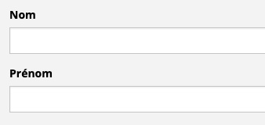Dans le formulaire de création d'un compte utilisateur, certains champs qui attendent des données personnelles ne sont pas correctement identifiés à l'aide de l'attribut autocomplete, notamment :
- Le champ "Nom" ;
- Le champ "Prénom".
Navigation
Recommandation :
Faciliter la navigation dans un ensemble de pages par au moins deux systèmes de navigation différents (menu de navigation, plan du site ou moteur de recherche), un fil d'Ariane et l'indication de la page active dans le menu de navigation. Identifier les groupes de liens importants et la zone de contenu et donner la possibilité de les éviter par des liens de navigation interne. S'assurer que l'ordre de tabulation est cohérent et que la page ne comporte pas de piège au clavier. S'assurer que les raccourcis clavier qui utilisent une seule touche sont contrôlables par l'utilisateur.
Systèmes de navigation
Le RGAA demande qu'un site propose au moins deux systèmes de navigations différents. Prévoir deux systèmes de navigation au moins est important, car :
- tous les utilisateurs ne naviguent pas de la même manière ;
- certains systèmes de navigation peuvent s'avérer trop complexes à utiliser, en particulier pour les personnes qui ont recours à des technologies d'assistance. Par exemple, un menu de navigation trop riche, comme un méga-menu, peut nécessiter beaucoup d'actions pour un utilisateur qui navigue exclusivement au clavier, et donc rendre sa recherche d'information très laborieuse.
Par systèmes de navigation, on entend tout procédé permettant une navigation dans le site ou dans une page, parmi :
- un menu de navigation principal ;
- un plan du site ;
- un moteur de recherche.
Note : un moteur de recherche est considéré comme un moyen de navigation s'il indexe toutes les pages du site (y compris les pages de type « Mentions légales » ou « Politique de confidentialité »), et non pas seulement un choix limité (par exemple, seulement les offres tarifaires).
Le plan du site, s’il est présent, doit être représentatif de l’arborescence du site et ne proposer que des liens fonctionnels.
Constats sur le site
Le site ne présente qu'un seul système de navigation : un menu de navigation principal.
Liens d'accès rapide
On note l'absence d'un lien d'accès rapide au contenu au moins. Les liens d'accès rapides sont utiles aux utilisateurs qui naviguent au clavier, mais aussi aux utilisateurs malvoyants qui utilisent une loupe d'écran afin de sauter rapidement les éléments redondants, comme la navigation.
Pour cela, il est préférable que ces liens soient toujours visibles à l'écran. Malgré cela, ces liens peuvent être positionnés hors écran, mais doivent au moins être rendus visibles à la prise de focus.
Il est donc nécessaire d'implémenter au moins un lien d'accès rapide au contenu, qui permet de sauter toute la navigation principale.
Constats sur le site
Le site ne possède pas de liens d'accès rapide.
Ordre de tabulation
La navigation dans les contenus peut être considérablement compliquée pour les personnes aveugles ou les personnes handicapées motrices qui naviguent au clavier si l'ordre de tabulation n'est pas cohérent.
L'ordre de tabulation est déterminé par l'ordre des éléments dans le code HTML. Il ne suit pas forcément l'ordre de lecture de la page ou de l'écran, mais il doit être cohérent en fonction de la nature des contenus et des fonctionnalités.
Constats sur le site
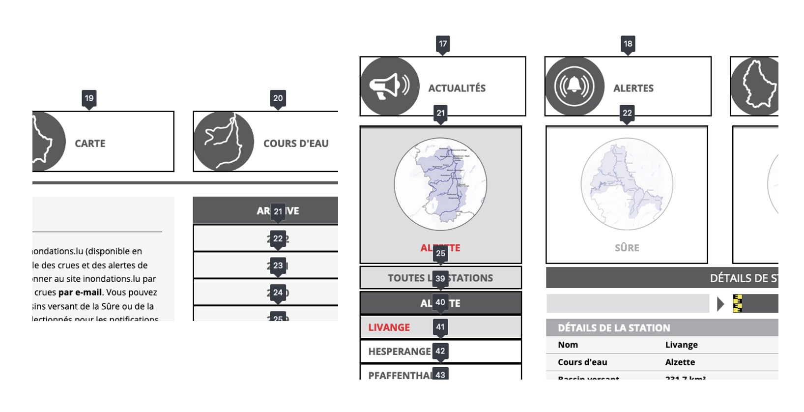Dans certaines pages du site, l'ordre de tabulation n'est pas cohérent, notamment :
- Dans la page "Actualités", on navigue d'abord dans le bloc contextuel "Archive" avant d'atteindre le contenu principal des actualités ;
- Dans la page détail d'une station, la tabulation dans les menus de navigation par région ou par station est coupée, passant d'abord par la liste des régions, le contenu principal puis la liste des stations.
Consultation
Recommandation
Vérifier que l'utilisateur a le contrôle des procédés de rafraîchissement, des changements brusques de luminosité, des ouvertures de nouvelles fenêtres et des contenus en mouvement ou clignotants. Ne pas faire dépendre l'accomplissement d'une tâche d'une limite de temps sauf si elle est essentielle et s'assurer que les données saisies sont récupérées après une interruption de session authentifiée. Proposer des versions accessibles ou rendre accessibles les documents en téléchargement. S'assurer que la consultation n'est pas dépendante de l'orientation de l'écran. Toujours proposer un geste simple en alternative d'un geste complexe permettant de réaliser une action.
Documents en téléchargement
Assurez-vous que chaque document soit accessible (cf. les Guides de créations de documents bureautiques accessibles), ou qu'il dispose d'une alternative accessible proposant le même contenu (par exemple, une version HTML correctement structurée).
Constats sur le site

La page "Actualités" contient des documents PDF qui ne sont pas accessibles, notamment :
- Titre du document absent ;
- Présence de tableaux dont les en-têtes ne sont pas signalés ;
- Ordre de lecture non cohérent.
Contenus en mouvement ou clignotants
Les contenus en mouvement peuvent être problématiques pour les utilisateurs avec des difficultés de lecture, en effet un contenu qui défile trop rapidement empêche d'accéder de fait à l'information. De plus, pour les personnes avec un déficit de l'attention, le mouvement les empêche de lire le reste de la page.
Il faut alors permettre aux utilisateurs d'arrêter et de redémarrer le contenu en mouvement , ou d'afficher tout le contenu sans le mouvement ou de masquer le contenu en mouvement et de le réafficher.
Constats sur le site
Le carrousel présent dans certaines pages défile automatiquement et sans la possibilité pour l'utilisateur de stopper cette animation.